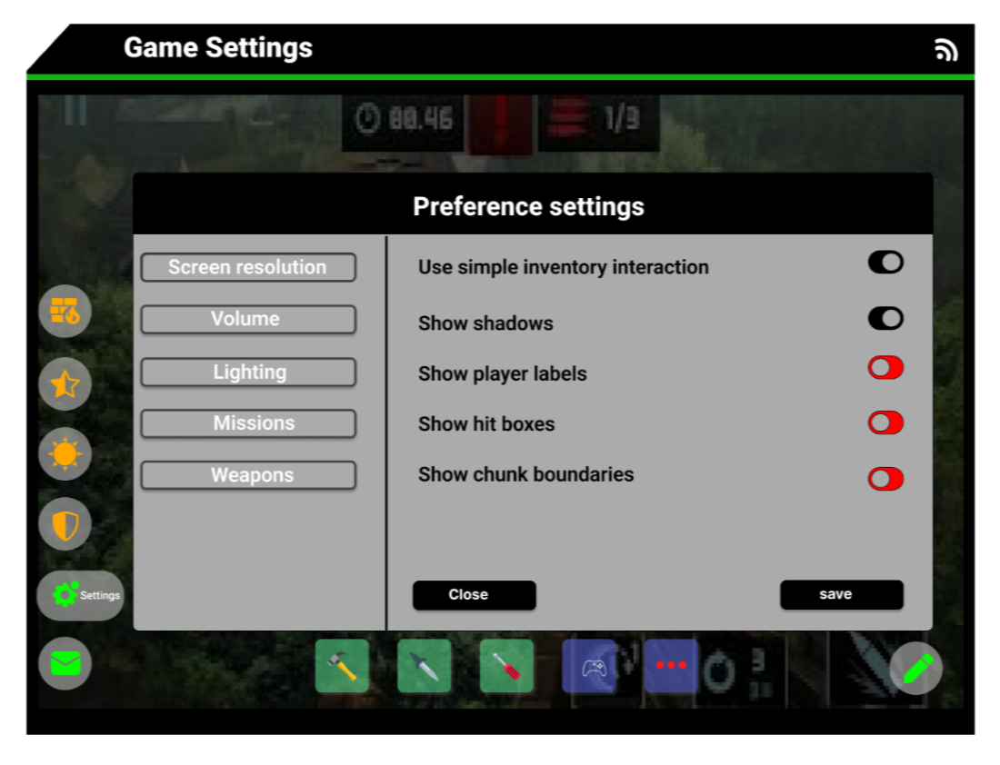

Game settings design

Project information
{kind=link}
Game settings design is the result of a project I did by myself
as a challenge.
The problem: Create a game settings design.
Solution: Game settings web design.
My Role: As a UI/UX and development team of one I was responsible for the 5 stage process
of UX research and UI design and application development.
My tools:
✔Sticky notes
✔Pens
✔Figma
✔illustrator
✔User story template
Process

Understand
Secondary researchLooking into existing secondary research from existing game settings UI to identify the UI navigation problems
Comparative analysis with settings UI
Empathize
Primary research through interviewDefine
Creating affinity map:Two themes emerged:
*Focus on button design
*Focus on layout
Empathy maps to organize info
Persona from empathy map
Problem statement
Ideate
Create a How might we question.Page re-design
Prototype
User Stories,actions and epicsInformation architecture with user flow diagrams
Sketches
Wireflows
Style Guide
Final Mockup:
